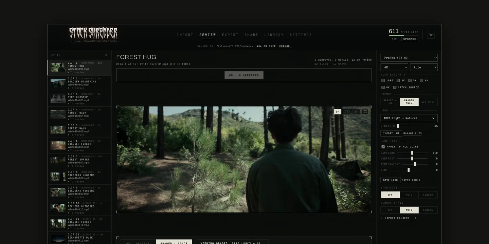

Stock Shredder · Rejections
Why Stock Footage Gets Rejected, and How to Fix It
Most video rejections come from a short list: shake, log footage, edits, audio, bars, logos and releases. Here's each one, from the sites' own pages, and how to catch it first.

The short version
- Shake, soft focus and rolling shutter wobble are the top quality reasons.
- Grade log footage to Rec 709 and upload at the resolution you shot.
- One shot per clip, trimmed clean, with no black bars and no music added.
- No logos or brands on commercial clips, and a release for every recognizable person.
- Metadata counts too: English, accurate, no brand names, no camera specs.
Stock Shredder flags logos, HDR, wrong frame rates and footage under 2K before you upload.
A rejection costs you twice.
A clip that comes back rejected has already cost you the trim, the grade, the export, the title and the keywords. Then you wait for review, read the reason, fix it and wait again.
The good news is that the reasons repeat. Adobe Stock, Shutterstock and Pond5 all publish theirs, and most video rejections come from the same short list. Catch them before upload and review day gets boring, in a good way.
Quality: what the reviewer sees.
- Shake and jitter. Adobe lists unstable, jittery video as a common quality issue. Use a tripod, gimbal or in-camera stabilization, and cut away from the bumpy start and end of a move.
- Rolling shutter. Adobe calls out skew, jello effects and flash banding. Slow the pan, or pick a different take.
- Ungraded log. Adobe refuses log footage without basic grading. A simple Rec 709 grade or LUT is enough. Buyers grade it again anyway.
- Upscaled video. HD blown up to 4K gets refused at Adobe. Upload at the resolution you shot.
- Poor light or color. Muddy exposure and odd white balance are both listed reasons. Shutterstock has a separate standard for white balance.
- Too much noise reduction or sharpening. Shutterstock rejects the plastic look heavy processing leaves behind.
Sources: Adobe Stock, common refusal reasons, Adobe Stock quality and technical standards, Shutterstock, understanding rejections. Checked November 2026.
Shooting log on Sony, Blackmagic or RED? The grade step is covered in the Sony FX3 and FX6 guide, Blackmagic RAW to stock clips and RED R3D to stock clips.
Editing: how the clip is cut.
- Edits inside a clip. Shutterstock rejects partial segments of other clips, poorly done montages and clips that weren't properly edited. One shot per file.
- Black at the head or tail. Shutterstock names excessive black at the start or end. Keep a small, clean handle and nothing more.
- Clip length. Shutterstock wants 5 to 60 seconds, unless the clip loops or is a complete transition.
- Bars and mattes. Shutterstock rejects letterboxed and matted clips, and pillarboxed ones unless they're archival. Cropping is the buyer's decision.
- Non-standard sizes. Export to a standard SD, HD or 4K size, the way the camera recorded it.
- Visible transitions or text. Adobe lists them as a video quality issue. Leave titles and effects to the buyer.
Sources: Shutterstock editing techniques, Shutterstock resolution and aspect ratio. Checked November 2026.
Audio: usually, leave it out.
Shutterstock rejects audio added in post, music or sound effects that may be copyrighted, and dialogue without a signed release from the speaker. Pond5 doesn't accept music or sound effects added in post either. The fix is simple: remove the audio track, or keep only clean ambient sound recorded on set.
Sources: Shutterstock audio, Pond5 legal guidelines. Checked November 2026.
Legal: logos, places and people.
- Logos and brands. Adobe and Pond5 both reject restricted trademarks on commercial clips. Frame them out, or upload as editorial.
- People. A recognizable person needs a signed model release for commercial use. Pond5 returns clips with a missing release, or takes them as editorial only.
- Places. Pond5 lists restricted architecture, and venues with paid admission need a release or permit.
- Similar clips. Adobe and Shutterstock both refuse near-duplicates. Pick the best take of each moment, not all of them.
Source: Pond5 legal guidelines. Checked November 2026.
Metadata: the words count too.
Pond5 returns clips with missing metadata or metadata that isn't in English. Shutterstock has its own rejection reasons for spelling and grammar and for inaccurate information. Adobe refuses irrelevant keywords.
Test a title and keywords before you submit with our free title and keyword checker. It flags brand names, camera details, repeats and length for each site.
Catching it by hand.
- Scrub every clip for shake, soft focus and wobble.
- Check the frame for logos, signs and faces.
- Trim to one shot, 5 to 60 seconds, clean head and tail.
- Grade log to Rec 709 and export at the shot resolution, no bars.
- Strip the audio unless it's clean sound from the set.
- Write an accurate English title and keywords, no brands.
Our average is about 2 minutes per clip for the prep alone. The checks above add to that, clip after clip.
The Stock Shredder way.
Point Stock Shredder at a folder of raw footage on your Mac or Windows computer. It handles most of the list above in one pass.

- It cuts one shot per clip. Clips come out of long takes inside the Min and Max length you set, cut where the camera is calm.
- It sets aside the bad parts. Broken, empty and too-shaky clips are filtered, with Keep anyway if you disagree.
- It flags problems. Logos, HDR, wrong frame rates and footage under 2K are flagged before you upload.
- It grades and exports. Built-in Looks for ARRI, DJI, RED and Sony, or your own LUT. Each clip its own ProRes file.
- It writes the words. Titles and keywords on Pro and Studio, plus upload sheets for Pond5, Adobe Stock and Shutterstock.

The time difference, measured.
Real Sony FX6 and FX3 footage on a MacBook Pro M3 Pro, exported to an external SSD as graded ProRes 422 HQ 4K.
100 clips
500 clips
1,000 clips
Stock Shredder time is shred plus export. Review time not included. By hand: 2 minutes per clip average.
What to know before you start.
Stock Shredder handles the repetitive parts. A few things stay with you.
- You own the releases. No software knows who signed a model or property release.
- You review. It flags problems. Your eye makes the final call on every clip.
- You strip the audio. Decide per clip whether the set sound is worth keeping.
- Fewer surprises. Logos, HDR, frame rates and low resolution are caught before review day, not after.
When by hand still makes sense.
- You're fixing a handful of rejected clips, not uploading a new drive.
- Each clip needs a custom edit or a hero grade.
For a full drive, the same checks run on every clip. That's the part worth handing off.
FAQ
Why does Adobe Stock refuse log footage?
Adobe lists log footage without basic grading as a common video quality issue. Apply a basic Rec 709 grade or LUT before you upload.
Why did Shutterstock reject my video for audio?
Shutterstock refuses audio added in post, music or sound effects that may be copyrighted, and dialogue without a signed release. Remove the audio track or keep only clean ambient sound recorded on set.
Can I upload letterboxed footage?
Not to Shutterstock. It rejects letterboxed and matted clips because cropping is the buyer's call, and pillarboxed clips unless they're archival. Export in a standard aspect ratio.
How long should a stock clip be?
Shutterstock's clip length rule is 5 to 60 seconds, unless the clip loops or is a complete transition.
What does Returned mean on Pond5?
Pond5 sends a clip back when something needs fixing: missing metadata, metadata not in English, or a release that hasn't been attached. Fix it and send it again.
Can I upload HD footage upscaled to 4K?
No. Adobe refuses upscaled video. Upload at the resolution you shot.